Structural S

40px
HEADER SIZE
A mark built to hold.
Two angular members form a split S. Broad geometric lettering gives it the character of an engineering practice.
Three distinct logo directions for an independent digital engineering studio. Compare their shapes, small-size clarity and fit with the website's palette.

Two angular members form a split S. Broad geometric lettering gives it the character of an engineering practice.

Four rounded modules connect around a central junction. Open joints and softer lettering suggest an approachable technical partner.

A compact, custom-drawn masthead with deep counters and cut terminals. No separate emblem: the name is the identity.